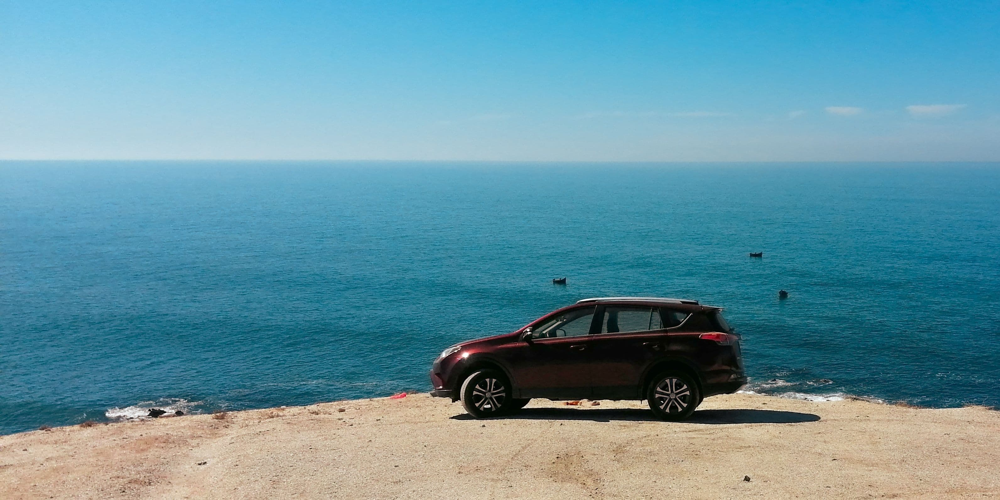

Réponse directe : fientes d'oiseaux, sève d'arbre et pollen sont tous acides ou collants, et la chaleur estivale accélère leur action sur le vernis. Non traités, ils marquent la peinture en quelques jours au lieu de quelques semaines. La règle simple : agir vite, jamais frotter à sec.
Pourquoi l'été abîme plus la peinture qu'on ne le pense
Le vernis automobile réagit à la chaleur comme n'importe quelle surface : les résidus organiques qui se posent dessus (fientes, sève, insectes) cuisent littéralement sous le soleil, ce qui accélère leur pénétration dans le film de vernis. Une tache qui aurait mis trois semaines à marquer en hiver peut le faire en trois jours en plein été.
Fientes d'oiseaux : pourquoi il faut agir vite
Les fientes sont fortement acides. Sur une carrosserie chauffée par le soleil, l'acide attaque le vernis en quelques heures seulement — c'est l'une des taches les plus urgentes à traiter, bien avant la sève ou le pollen. Ne jamais essuyer à sec : ça raye systématiquement. Humidifiez d'abord avec un chiffon microfibre mouillé, laissez le dépôt se ramollir, puis retirez sans frotter.
Sève d'arbre et pollen : comment nettoyer sans rayer
La sève est collante et durcit en séchant, ce qui la rend difficile à retirer sans forcer sur le chiffon — exactement ce qu'il ne faut pas faire. Le pollen, plus fin, s'incruste dans les micro-reliefs de la peinture et devient abrasif s'il est essuyé à sec. Dans les deux cas, un pré-mouillage abondant avant tout contact est indispensable pour éviter la rayure. Un lavage sans rinçage, qui encapsule les particules dans un lubrifiant avant de les retirer, traite ce type de dépôt sans jamais frotter à sec.
À quelle fréquence laver sa voiture en été ?
Pas de calendrier fixe utile ici — le bon repère est événementiel : après un stationnement prolongé sous un arbre (sève, fientes), après un épisode de forte chaleur suivi de pollen visible, ou dès qu'un dépôt organique reste plus de 48 heures sur la carrosserie. Un lavage extérieur régulier reste la meilleure prévention : une carrosserie propre retient moins ces dépôts qu'une carrosserie déjà encrassée.
Ce n'est jamais le dépôt lui-même qui marque le vernis — c'est le temps qu'on le laisse cuire au soleil avant de le retirer.
On s'occupe de votre voiture ?
Lavage à domicile en Alsace, sur rendez-vous 7j/7.